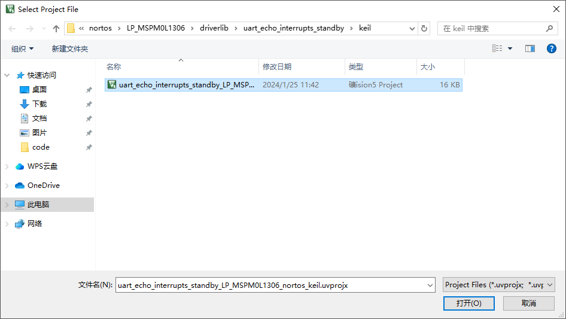
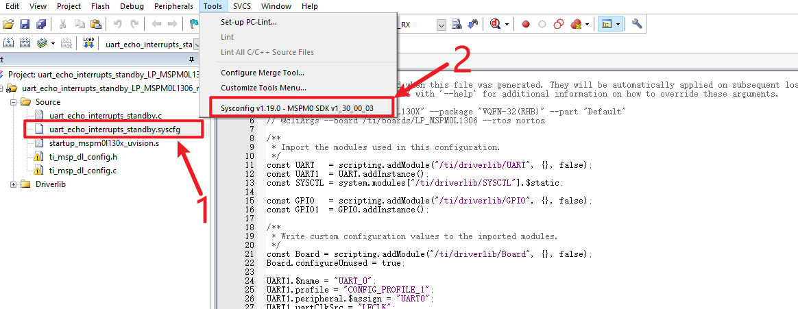
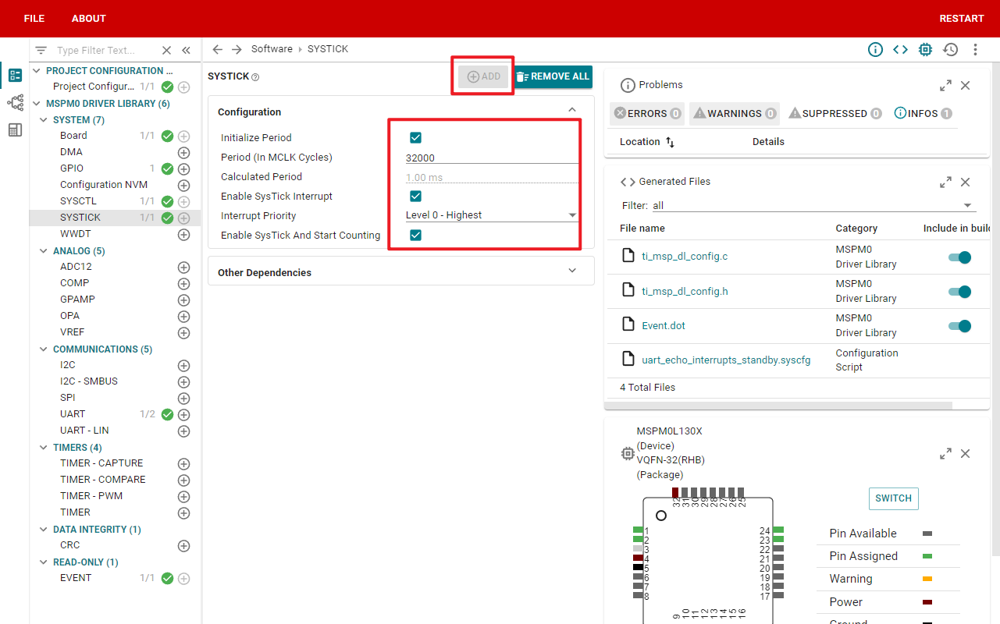
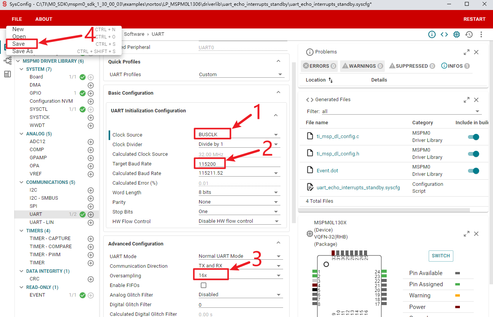
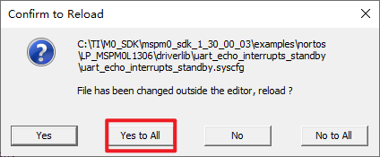
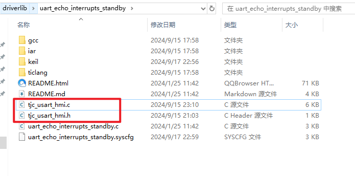
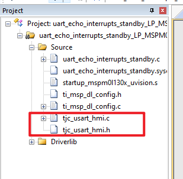
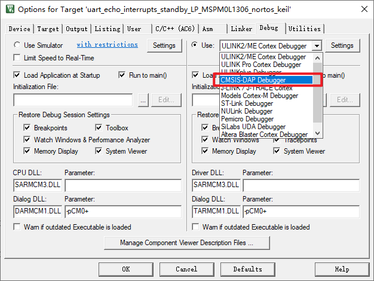
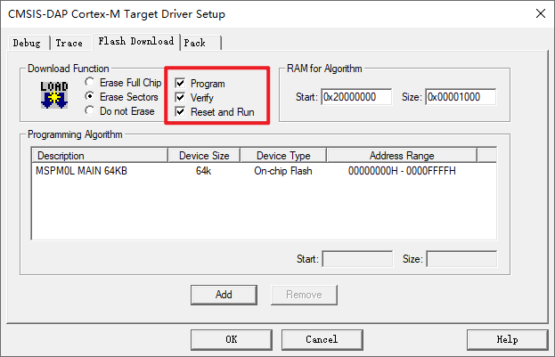

与TI（德州仪器）单片机联调2
打开工程，其目录为 \TI\M0_SDK\mspm0_sdk_1_30_00_03\examples\nortos\LP_MSPM0L1306\driverlib\uart_echo_interrupts_standby\keil

打开uart_echo_interrupts_standby.syscfg，并保持在当前文件，打开sysconfig工具

开启系统滴答定时器，并配置如下

修改串口配置如下：
1、时钟源改为BUSCLK（修改时钟源后会有警告，把后面两个全部修改完之后就不会有警告提示了）
2、波特率改为115200，
3、采样改为16x
不要更改其他地方，否则会造成配置变化无法通讯
点击save保存

点击yes to all，更新所有文件，这里可能会出现一个问题，参考 缺少ti_msp_dl_config.c和ti_msp_dl_config.h

将tjc_usart_hmi.c和tjc_usart_hmi.h复制到工程目录下

将tjc_usart_hmi.c和tjc_usart_hmi.h添加到工程中（这两个文件会在后面的工程里提供，需要自行从工程里找到然后导入客户自己的工程中）

配置下载工具，使用的是daplink，请勿使用stlink

勾选自动复位

uart_echo_interrupts_standby.c中的代码如下,编译下载，即可正常通讯
/*
* Copyright (c) 2021, Texas Instruments Incorporated
* All rights reserved.
*
* Redistribution and use in source and binary forms, with or without
* modification, are permitted provided that the following conditions
* are met:
*
* * Redistributions of source code must retain the above copyright
* notice, this list of conditions and the following disclaimer.
*
* * Redistributions in binary form must reproduce the above copyright
* notice, this list of conditions and the following disclaimer in the
* documentation and/or other materials provided with the distribution.
*
* * Neither the name of Texas Instruments Incorporated nor the names of
* its contributors may be used to endorse or promote products derived
* from this software without specific prior written permission.
*
* THIS SOFTWARE IS PROVIDED BY THE COPYRIGHT HOLDERS AND CONTRIBUTORS "AS IS"
* AND ANY EXPRESS OR IMPLIED WARRANTIES, INCLUDING, BUT NOT LIMITED TO,
* THE IMPLIED WARRANTIES OF MERCHANTABILITY AND FITNESS FOR A PARTICULAR
* PURPOSE ARE DISCLAIMED. IN NO EVENT SHALL THE COPYRIGHT OWNER OR
* CONTRIBUTORS BE LIABLE FOR ANY DIRECT, INDIRECT, INCIDENTAL, SPECIAL,
* EXEMPLARY, OR CONSEQUENTIAL DAMAGES (INCLUDING, BUT NOT LIMITED TO,
* PROCUREMENT OF SUBSTITUTE GOODS OR SERVICES; LOSS OF USE, DATA, OR PROFITS;
* OR BUSINESS INTERRUPTION) HOWEVER CAUSED AND ON ANY THEORY OF LIABILITY,
* WHETHER IN CONTRACT, STRICT LIABILITY, OR TORT (INCLUDING NEGLIGENCE OR
* OTHERWISE) ARISING IN ANY WAY OUT OF THE USE OF THIS SOFTWARE,
* EVEN IF ADVISED OF THE POSSIBILITY OF SUCH DAMAGE.
*/
#include "ti_msp_dl_config.h"
#include "tjc_usart_hmi.h"
#include "stdio.h"
#define FRAME_LENGTH 7
volatile uint32_t delay_times = 0;
volatile uint8_t uart_data = 0;
volatile uint32_t now_time = 0;
// 搭配滴答定时器实现的精确ms延时
void delay_ms(unsigned int ms)
{
delay_times = ms;
while (delay_times != 0)
;
}
int main(void)
{
SYSCFG_DL_init();
// 清除串口中断标志
NVIC_ClearPendingIRQ(UART_0_INST_INT_IRQN);
// 使能串口中断
NVIC_EnableIRQ(UART_0_INST_INT_IRQN);
int a = 100;
char str[100];
uint32_t last_time = 0;
while (1)
{
if (now_time - last_time >= 1000)
{
last_time = now_time;
sprintf(str, "n0.val=%d", a);
tjc_send_string(str);
sprintf(str, "t0.txt=\"%d\"\xff\xff\xff", a);
tjc_send_string(str);
sprintf(str, "click b0,1\xff\xff\xff");
tjc_send_string(str);
delay_ms(50);
sprintf(str, "click b0,0\xff\xff\xff");
tjc_send_string(str);
a++;
}
// stm32f103的GND接串口屏或串口工具的GND,共地
// stm32f103的TX1(PA9)接串口屏或串口工具的RX
// stm32f103的RX1(PA10)接串口屏或串口工具的TX
// stm32f103的5V接串口屏的5V,如果是串口工具,不用接5V也可以
// 串口数据格式：
// 串口数据帧长度：7字节
// 帧头 参数1 参数2 参数3 帧尾
// 0x55 1字节 1字节 1字节 0xffffff
// 当参数是01时
// 帧头 参数1 参数2 参数3 帧尾
// 0x55 01 led编号 led状态 0xffffff
// 例子1：上位机代码 printh 55 01 01 00 ff ff ff 含义：1号led关闭
// 例子2：上位机代码 printh 55 01 04 01 ff ff ff 含义：4号led打开
// 例子3：上位机代码 printh 55 01 00 01 ff ff ff 含义：0号led打开
// 例子4：上位机代码 printh 55 01 04 00 ff ff ff 含义：4号led关闭
// 当参数是02或03时
// 帧头 参数1 参数2 参数3 帧尾
// 0x55 02/03 滑动值 00 0xffffff
// 例子1：上位机代码 printh 55 02 64 00 ff ff ff 含义：h0.val=100
// 例子2：上位机代码 printh 55 02 00 00 ff ff ff 含义：h0.val=0
// 例子3：上位机代码 printh 55 03 64 00 ff ff ff 含义：h1.val=100
// 例子4：上位机代码 printh 55 03 00 00 ff ff ff 含义：h1.val=0
// 当串口缓冲区大于等于一帧的长度时
while (usize >= FRAME_LENGTH)
{
// 校验帧头帧尾是否匹配
if (usize >= FRAME_LENGTH && u(0) == 0x55 && u(4) == 0xff && u(5) == 0xff && u(6) == 0xff)
{
// 匹配，进行解析
if (u(1) == 0x01)
{
sprintf(str, "msg.txt=\"led %d is %s\"", u(2), u(3) ? "on" : "off");
tjc_send_string(str);
if (u(2) == 0x00)
{
if (u(3) == 0x00)
{
// DL_GPIO_clearPins(LED1_PORT,LED1_PIN_14_PIN);//输出低电平
}
else
{
// DL_GPIO_setPins(LED1_PORT,LED1_PIN_14_PIN); //输出高电平
}
}
}
else if (u(1) == 0x02)
{
// 下发的是h0进度条的信息
sprintf(str, "msg.txt=\"h0.val is %d\"", u(2));
tjc_send_string(str);
}
else if (u(1) == 0x03)
{
// 下发的是h1进度条的信息
sprintf(str, "msg.txt=\"h1.val is %d\"", u(2));
tjc_send_string(str);
}
udelete(7); // 删除解析过的数据
}
else
{
// 不匹配删除1字节
udelete(1);
break;
}
}
}
}
void SysTick_Handler()
{
if (delay_times != 0)
{
delay_times--;
}
now_time++;
}
// 串口的中断服务函数
void UART_0_INST_IRQHandler(void)
{
// 如果产生了串口中断
switch (DL_UART_Main_getPendingInterrupt(UART_0_INST))
{
case DL_UART_MAIN_IIDX_RX: // 如果是接收中断
// 接发送过来的数据保存在变量中
uart_data = DL_UART_Main_receiveData(UART_0_INST);
// 将保存的数据再发送出去
// uart0_send_char(uart_data);
writeRingBuff(uart_data);
break;
default: // 其他的串口中断
break;
}
}